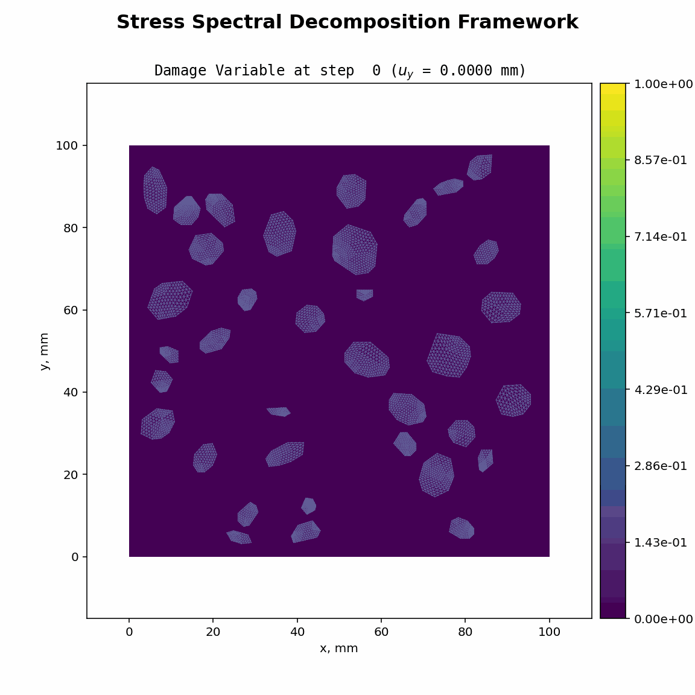
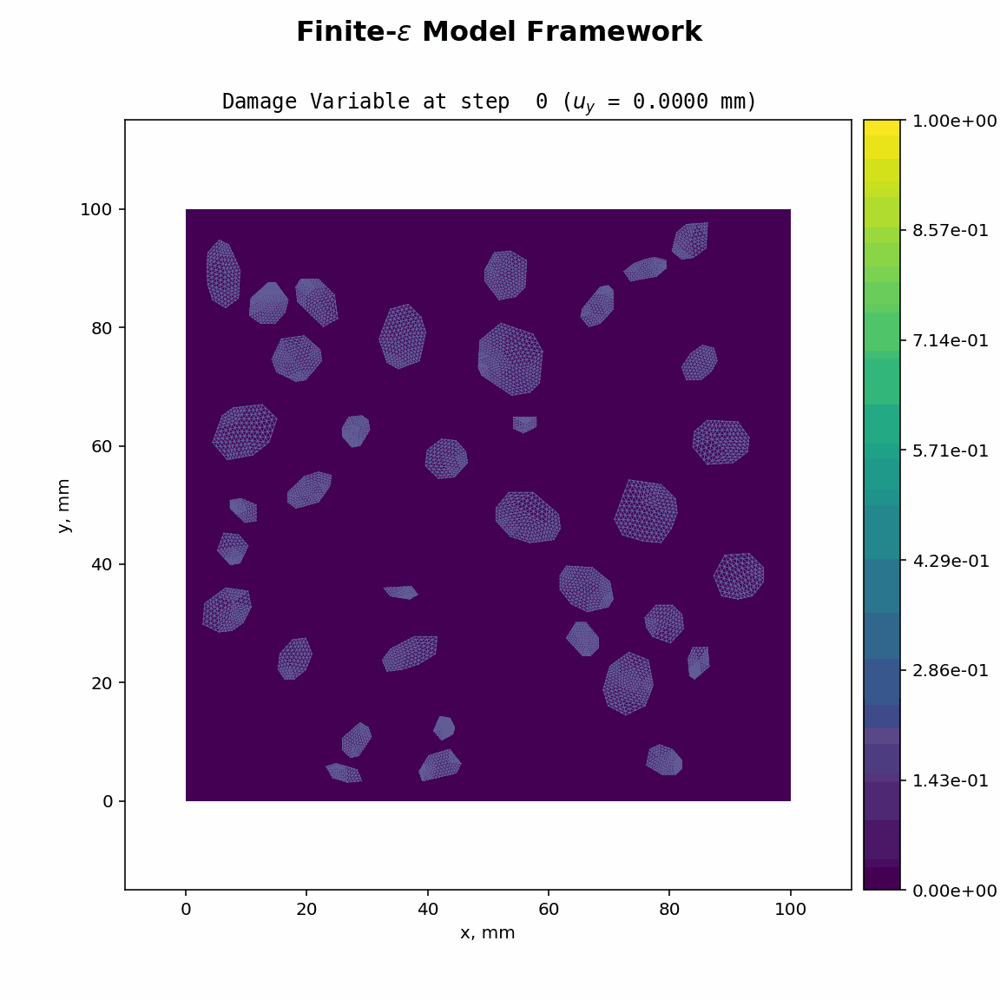

🌟 2D Uniaxial Compression on Composite Material
🚀 Milestone Achieved!
I’ve been wanting to test out the Finite-epsilon model by implementing it in an open-source framework and running it myself. In phase-field fracture mechanics, material failure is typically represented by introducing a damage variable \( d \) into a diffusion equation. To differentiate between tensile and shear failure, a common approach is to extract part of the elastic strain energy to drive the evolution of \( d \).
However, many traditional decomposition methods—such as stress deviatoric decomposition and stress spectral decomposition—struggle with convergence, particularly under uniaxial compression. In these cases, residual errors persist, forcing the time step size to drop to extreme levels (as low as \(1e-8\)). Even with all 16 cores of my personal computer running, the simulation barely progressed 2 mm in two days.
While literature offers numerous alternative energy split methods, most come with significant trade-offs. Some lack mathematical rigor, while others are so complex that implementing them requires dealing with excessive if-else conditions, making the code unwieldy and prone to numerical instability. Many of these approaches feel more like quick-fix solutions aimed at boosting publication counts rather than well-founded models.
In contrast, the Finite-epsilon model is the only one that successfully ran to completion in my tests. 🎯
🚀Key Highlights:
✅ Micro-structural damage evolution
✅ Coupled system: Equilibrium + Phase-field fracture model
✅ Boundary conditions: Regular uniaxial compression
✅ Tested across different frameworks


